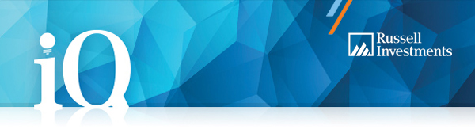

|
Click here to view online
|
|

|
Hi %%First Name%%
Your iQ SuperTM – Saver account is ready!
|
Your account is now open, and below are all the details you need to get set up and start making the most of your super.
- Your member number: %%member_number%%
- Your Customer Reference Number (CRN): %%crn%%
|
Get started
Register for online access to explore your new online account.
You’ll find everything you need online. You can view, transact and manage your super account when it suits you; check out your personalised super To Do List; and access important documents, such as your Product Disclosure Statement.
|
Finalise your insurance cover
Since you told us you want insurance cover, you’ll need to take a few minutes to take part in an online underwriting process. To access it, select the Manage your insurance option in your online account.
|
|
What's next?
We will shortly send you a welcome letter with your iQ Super member card. There will also be a Choice of Superannuation Fund document, which you can give to your employer, so they can make super contributions directly into your iQ Super – Saver account.
We’re here to help
If you have any questions, please call us on 1800 555 667 (+61 2 9374 3916 from overseas) or email us.
Yours sincerely
iQ Super – Saver
For and on behalf of the Trustee, Total Risk Management Pty Ltd.
|
Manage your super on the go with our app
The Russell Investments Super App can help you take control of your super and make positive changes to improve your life after work.
You can set a retirement goal and track your progress, compare your balance with others like you, find and consolidate your lost super, make extra contributions, change your investment strategy, update your details, check your balance and investment returns and so much more—all at the touch of a button.
|
|